- Home
- Pet Products
- Anti-Barking Device
Goodbye Barking!
How One Button Instantly
Brought the Zen Back To My Home.
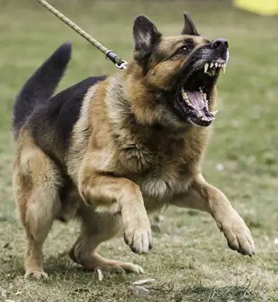
BEFORE
AFTER
My wife and I both grew up with dogs. I had 3—she had 5. So when our two sons begged us for a dog, we felt a jolt of excitement at adding a new heartbeat to our home.
We wanted to give our boys the same childhood we loved so much with animals. How could we say no?
And we’re both experienced dog-owners—What could go wrong?
Say hello to Cooper. Playful, goofy, cuddle-bug—a best-friend to all of us.
But his barking? A never-ending nightmare.
Turning on the shower. Walking out the front door. Walking out the back door. Cars, mailman, guests at our home and even just people walking by the house.
Everything—and I mean everything—set him off into a barking frenzy.
-
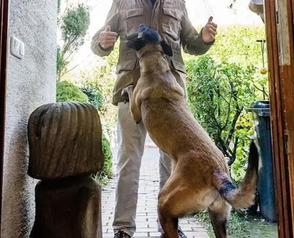
-
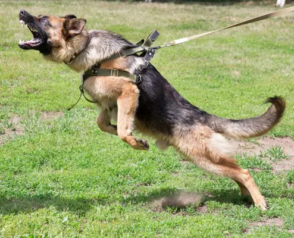
-
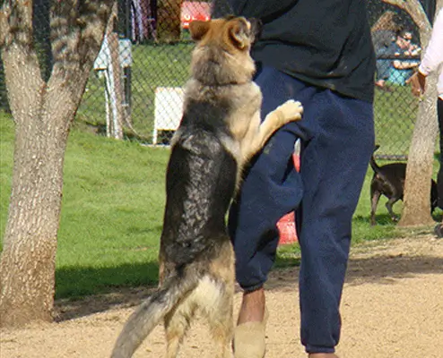
I was constantly apologizing to my neighbours and every dog owner I walked past…totally embarrassed.
We were all losing sleep and getting more and more frustrated.
My wife and I were arguing over the dog. We fought over who would walk him. Who would try to calm him down…who would discipline him…
We looked into shock collars, choke collars, obedience classes–not even professional dog trainers wanted to deal with him…
But then the most devastating thing happened:
Our two boys were becoming scared of Cooper—the dog who was supposed to be their best bud.
I watched them avoid him altogether—afraid to play with him, let alone pet him.
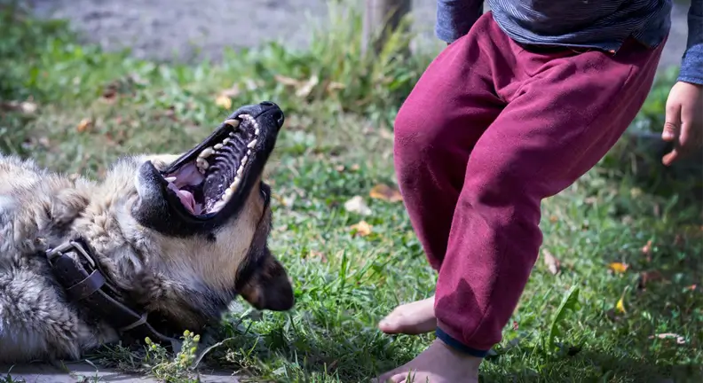
I thought to myself, “Was this just a big mistake?”
I played it out in my head—having the difficult conversation with the boys and my wife, bringing Cooper back to the humane society—the tears, the guilt—the shame.
I sat there in silence—it all piled up and broke me.
I desperately needed to find a solution—not just for us, but for Cooper, too.
Then Came the Solution I Never Expected.
A few days after my feeling of hopelessness, our friend Tim brought his dog over to try and play with Cooper.
When we brought Cooper out into the yard he seemed fine—until his biggest trigger ran up our fence…a squirrel.
“Oh man,” I thought, “Here we go.” I got tense, ready to grab Cooper and throw him inside.
But before he could erupt into his usual barking frenzy, Tim clicked a button on a small device and both dogs stopped dead in their tracks.
I couldn’t believe what I saw—I was still tense, ready to grab Cooper.
“What the hell was that?!” I asked Tim, completely shocked.
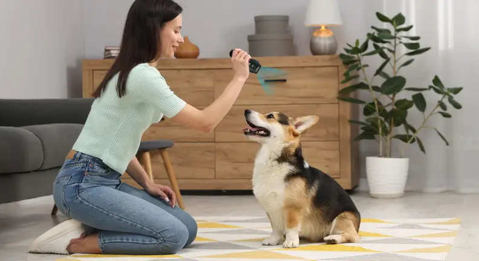
“Oh this? It’s called the NoBark Ultra.” He handed it to me. “I never leave the house without it.”
One click was all it took to get instant silence—instant peace.
I ordered one on the spot—right then and there.
“I Don’t Believe It…”
My Wife
Said.
We watched Cooper in our living room. Calm. Relaxed. Happy.
Any time we saw him flinch to start barking, we’d click the button
on the
NoBark Ultra. Just
like that, he stopped.
-
Mailman coming to the door? Click.
-
Car pulling past the house? Click.
-
Squirrel in the yard? You bet we clicked it.
And each time, Cooper would stop turn and lock his attention on us.
No barking…Instead he’d sit content and serene.
After Doing More Research on the NoBark Ultra This is What I Found…
At first glance, it may look like a small remote—but inside is powerful, vet-approved technology designed to help dog owners reclaim peace and quiet without hurting their pets.
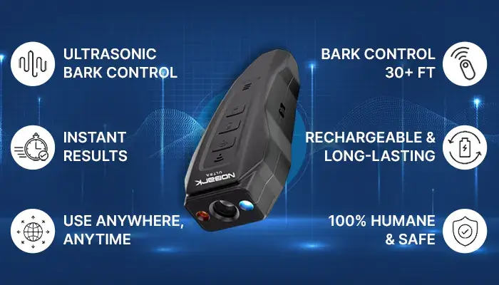
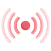
Ultrasonic Bark Control—That Actually Works
NoBark Ultra emits a high-frequency sound that only dogs can
hear—instantly grabbing their
attention and interrupting the barking.
This isn’t guesswork. The frequency was carefully selected by
canine
behavior specialists to be 100%
safe, non-painful, and effective.
Instant Results—Right Out of the Box
Just give it a quick charge and you're ready to go. Whether your dog is big or small, results happen fast—often within the first click.
A built-in vibration lets you know it's working so you're never left guessing.
Use It Anywhere, Anytime
No bulky base stations. No setups. NoBark Ultra fits in your pocket and goes wherever you and your dog go—walks, parks, backyards, or inside the home.
And for those late-night outings, the built-in LED flashlight is a handy bonus.
Control Barking From Over 30 Feet Away
Most bark control devices require you to be standing right next to your dog. Not this one.
NoBark Ultra works from up to 30+ feet, letting you stop unwanted behavior from across the yard, across the room, or wherever your dog needs guidance.
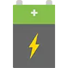
Long-Lasting Rechargeable Battery
Tired of replacing expensive AA or AAA batteries? So were we.
That’s why NoBark Ultra runs on a rechargeable battery that lasts up to 60 days on a single charge. A quick top-up and you're good for weeks.
100% Humane, Stress-Free Training
No shocks. No choking. No muzzles. Just a gentle sound that calmly redirects behavior back you and away from the triggering behavior.
NoBark Ultra reinforces good habits without fear, pain, or stress, making it one of the safest and most humane ways to train your dog.
Peace for You and Your Dog
With NoBark Ultra, your dog doesn’t stop being themselves—they just stop the nonstop barking.
You’ll finally be able to sleep through the night, enjoy peaceful walks, and stop apologizing to the neighbors.
And your dog? They’ll feel calmer, more focused, and more connected to you than ever before.
Update on My Dog’s Progress
The Change Was Fast. And
It Was Real.
The first few days:
Cooper was about the same. He’d bark at cars, lose his cool when we left the house, and those damn squirrels still set him off.
But each time he’d bark, I’d click the button on the NoBark Ultra, and I would have his full attention immediately and after a few seconds he would calm down.
After one week:
You could see a complete change in Cooper. He responded well to my commands, and the NoBark Ultra was the perfect trigger to quiet him. I’d press the button, and he would relax.
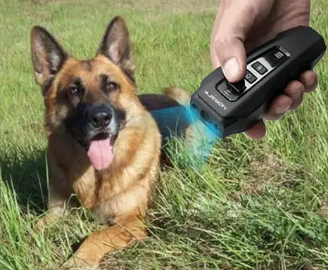
Two weeks in:
The NoBark Ultra was the perfect tool, and Cooper was the perfect dog. He’d take an interest in those earlier triggers—the cars and the squirrels—but only his ears would perk up, not his barking
After about a month or so, Cooper was back to being his complete self. Goofy, playful and always eager to cuddle with everyone. The barking was under control, and our house was at peace.
Our boys were unafraid to play with him, my wife and I walked him together, and I couldn’t remember the last time I had to apologize to my neighbours.
And it all started with this amazing device.
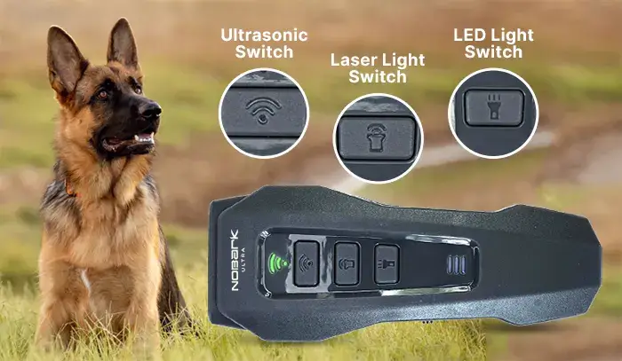
Other Dog Owners Are Seeing the
Same
Results
I came to realize there was a whole community of folks who had trouble with their dog’s barking, and they also relied on the NoBark Ultra.
Robert and his wife, Liz, for example, just had a newborn and they couldn’t get their dog to stop barking.
All hours of the day, and all hours of the night. Having a newborn was hard enough, and with a dog barking like crazy ruining a baby’s sleep—a new mom’s sleep too?
It was too much to handle for Robert and Liz.
But then they too found the NoBark Ultra.
“Neither of us could sleep. And with the baby…all signs pointed to us having to give up our dog, Rocky. We’ve had him for 7 years now. But then a friend let us try their NoBark Ultra—what a world of difference it made! With the press of a button, Rocky has all eyes on me, and that lets me calm him down. With some positive reinforcement, he barely ever barks—it’s given us our sleep back, and our baby boy is back to his regular sleep schedule as well.
- Robert P. 34Verified Customer
Janet, an administrative assistant works from home full-time. She can barely take meetings because her dog, Maya, won’t stop barking.
She’d run out of options after having tried everything: positive reinforcement, negative reinforcement, all the gadgets—treats, toys, you name it.
Her boss had a chat with her about her dog’s barking in the background during important meetings. That was the last straw for Janet—something had to change.
And it did—thanks to NoBark Ultra.
“I thought my job was over. I could tell my boss and other colleagues were losing their patience—and I felt the same way. Maya was just non-stop barking. I tried everything under the sun. When my best-friend at work told me about NoBark Ultra, I thought ‘Here we go again, another failed barking control device.’ But I was so wrong. It worked instantly, and more importantly it was humane. Maya to being my sweet lil furbaby and I’m not hesitant to take meetings anymore!”
- Janet L. 42Verified Customer
What about two completely different dogs, with opposite sizes, opposite personalities? Ask Megan and her husband Patrick. They’ve got Lucy, a Dachshund, and Max, a German Shepherd.
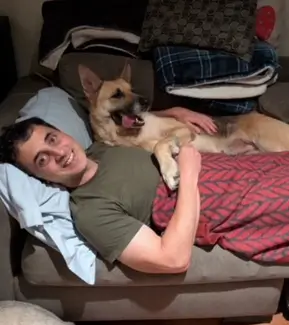
Both dogs get along great, but when one starts barking, it sets off the other.
Megan has a hard time sleeping as it is, and Patrick works from home. It’s a nightmare for both of them, and while they love their dogs—it became too much.
Until someone recommended NoBark Ultra.
“We spent HUNDREDS on obedience classes. We did one-on-one dog trainers. We tried the collars, separation tactics—I feel like we tried it all, and had nothing to show for it. When we heard about NoBark Ultra we thought, ‘Ok, for Lucy, sure—she’s tiny it’ll work. But what about Max?’ Well I was totally SHOCKED—the NoBark Ultra worked for both dogs. They’re both receptive and a lot easier going now. The barking truly is gone and we couldn’t be happier.”
- Megan & Patrick H. 51, 55Verified Customer
Why the NoBark Ultra Works When Nothing Else Does
Shock collars and choke collars don’t get your dog’s attention—they’re a painful stimulus that increases their discomfort and anxiety which leads to an increase in angression and ultimately ruins your bond.
- Features
- Pain-Free
- Builds Trust
- Scientifically Backed
- Easy to Use
- Safe for All Dogs
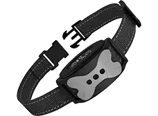
- Shock Collars
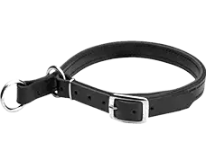
- Choke Collars
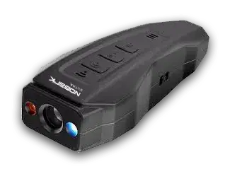
- NoBark Ultra
NoBark Ultra does the opposite—it uses a humane and gentle approach, getting your dog’s attention with Ultrasonic Sound Waves that allows you to correct their behaviour by redirecting their energy-positively.

The NoBark Ultra isn’t just a barking control device though. It’s a veterinarian-backed innovative tool engineered by scientists, designed to:
-
Relax and calm your dog down.
-
Bring peace and quiet back to your home.
-
Give you the uninterrupted sleep you miss.
-
Let you stop apologizing to your neighbours and other dog owners.
-
Restore the loving connection between you and your dog.
All with the simple click of a button.
No harmful collars. No expensive trainers. Just results.
A Solution That Actually Works Is
63% Off
We were at our wits end. Shock and choke collars would hurt Cooper and made us feel horrible. Obedience classes and high-end professional trainers would empty our wallets.
Solution after solution, hundreds—potentially thousands—of dollars spent, with no no change.
Like so many other dog owners, if we hadn’t been introduced to the NoBark Ultra, things would’ve continued to get worse…they would’ve gone to a place I couldn’t live with.
I’d heard about folks having to give up their pets—their family.
That’s when I knew NoBark Ultra had to be in more people’s hands.
I reached out directly to the manufacturer and asked if they’d
make it
accessible—at a friendly price
that regular dog owners could actually afford.
They were overjoyed to help.
In fact, they wanted to help as many families as possible, so they gave us their best deal yet.
Right now, you can pick up your NoBark Ultra with a 63% OFF LIMITED-TIME OFFER exclusively for this page.
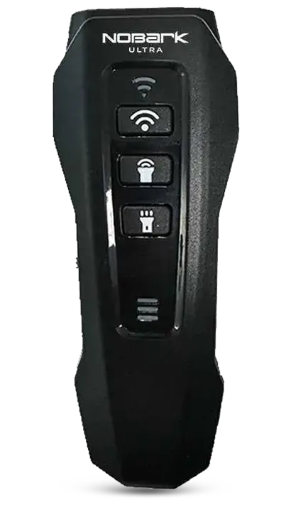
63%
Off
BUT—and this is important: We only got a small supply of NoBark Ultra devices that are offered at this exclusive price. Once they’re gone…there are no more. That’s it!
We’ve seen the NoBark Ultra sell out pretty quickly just by word of mouth at its regular price—so with a deal like this? It’s only a matter of time before they’re gone again.
Click Here to get Your
Exclusive
Discount